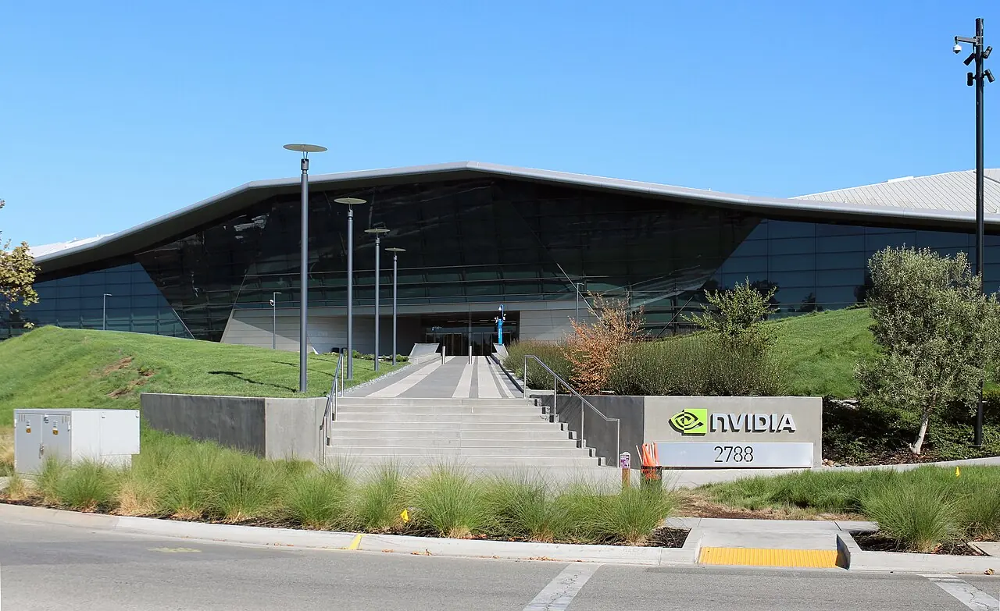

엔비디아 주식을 볼 때 가장 쉬운 이야기는 AI 수요가 계속 강하다는 말입니다. 하지만 주가가 이미 높은 성장을 반영한 뒤에는 매출 증가율보다 마진이 더 중요해집니다. 같은 10억 달러 매출도 매출총이익률이 유지되는지, 고객이 다음 세대 장비까지 같은 속도로 주문하는지에 따라 가치가 달라집니다.
엔비디아는 단순한 그래픽카드 회사가 아니라 AI 데이터센터의 핵심 공급자로 바뀌었습니다. GPU, 네트워킹, 시스템, 소프트웨어가 묶이면서 가격 결정력이 커졌습니다. 그러나 고객은 대형 클라우드와 AI 인프라 사업자에 집중돼 있고, 이들의 자본지출 속도가 느려지면 엔비디아의 성장률도 빠르게 낮아질 수 있습니다.
투자자는 엔비디아를 “좋은 회사인가”가 아니라 “이미 좋은 회사로 평가받는 가격을 계속 정당화할 수 있는가”로 봐야 합니다. 그 답은 AI 매출 표제 수치보다 마진, 공급 병목, 고객 투자수익률, 차세대 제품 전환의 네 줄에서 나옵니다.
매출보다 마진이 먼저입니다

AI 가속기 수요가 강해도 가격 할인과 공급 확대가 시작되면 이익률은 달라집니다.
매출총이익률이 높은 수준을 유지해야 현재 밸류에이션이 설득력을 얻습니다.
신제품 초기 비용과 패키징 병목은 매출 증가 속도보다 먼저 마진에 반영될 수 있습니다.
이 대목에서는 숫자 하나를 따로 떼어 보지 않는 편이 좋습니다. AI 가속기 수요가 강해도 가격 할인과 공급 확대가 시작되면 이익률은 달라집니다. 매출총이익률이 높은 수준을 유지해야 현재 밸류에이션이 설득력을 얻습니다. 신제품 초기 비용과 패키징 병목은 매출 증가 속도보다 먼저 마진에 반영될 수 있습니다. 이 흐름이 다음 분기에도 이어지는지 확인하면 뉴스의 크기와 실제 투자 가치 사이의 간격을 줄일 수 있습니다.
고객의 투자수익률을 봅니다
관련 영상
엔비디아 AI 인프라와 실적을 해설하는 한국어 영상
클라우드 기업은 AI 인프라가 실제 매출과 생산성으로 연결되는지 계산합니다.
고객의 자본지출이 매출보다 빠르게 늘면 어느 순간 투자 속도 조절이 나올 수 있습니다.
엔비디아 주문 잔고는 고객의 현금흐름과 데이터센터 전력 확보 속도에 묶여 있습니다.
이 대목에서는 숫자 하나를 따로 떼어 보지 않는 편이 좋습니다. 클라우드 기업은 AI 인프라가 실제 매출과 생산성으로 연결되는지 계산합니다. 고객의 자본지출이 매출보다 빠르게 늘면 어느 순간 투자 속도 조절이 나올 수 있습니다. 엔비디아 주문 잔고는 고객의 현금흐름과 데이터센터 전력 확보 속도에 묶여 있습니다. 이 흐름이 다음 분기에도 이어지는지 확인하면 뉴스의 크기와 실제 투자 가치 사이의 간격을 줄일 수 있습니다.
제품 전환은 기회이자 비용입니다
블랙웰과 이후 제품군은 성능 우위를 유지하는 핵심입니다.
다만 전환기에는 수율, 냉각, 서버 설계, 네트워킹 비용이 동시에 올라갈 수 있습니다.
투자자는 출시 발표보다 실제 출하와 마진 가이던스를 더 크게 봐야 합니다.
이 대목에서는 숫자 하나를 따로 떼어 보지 않는 편이 좋습니다. 블랙웰과 이후 제품군은 성능 우위를 유지하는 핵심입니다. 다만 전환기에는 수율, 냉각, 서버 설계, 네트워킹 비용이 동시에 올라갈 수 있습니다. 투자자는 출시 발표보다 실제 출하와 마진 가이던스를 더 크게 봐야 합니다. 이 흐름이 다음 분기에도 이어지는지 확인하면 뉴스의 크기와 실제 투자 가치 사이의 간격을 줄일 수 있습니다.
경쟁은 가격이 아니라 대체입니다
맞춤형 AI 반도체와 자체 칩은 단기간에 엔비디아를 대체하기 어렵습니다.
그러나 대형 고객이 일부 워크로드를 자체 칩으로 돌리면 협상력이 바뀝니다.
경쟁의 핵심은 성능 비교보다 고객이 전체 비용을 낮출 수 있느냐입니다.
이 대목에서는 숫자 하나를 따로 떼어 보지 않는 편이 좋습니다. 맞춤형 AI 반도체와 자체 칩은 단기간에 엔비디아를 대체하기 어렵습니다. 그러나 대형 고객이 일부 워크로드를 자체 칩으로 돌리면 협상력이 바뀝니다. 경쟁의 핵심은 성능 비교보다 고객이 전체 비용을 낮출 수 있느냐입니다. 이 흐름이 다음 분기에도 이어지는지 확인하면 뉴스의 크기와 실제 투자 가치 사이의 간격을 줄일 수 있습니다.
주가 판단은 속도의 문제입니다
좋은 실적이 계속 나와도 성장률 둔화가 빠르면 주가는 먼저 반응합니다.
분기 실적에서는 데이터센터 매출, 매출총이익률, 고객 집중도를 함께 봐야 합니다.
장기 투자자는 AI 수요보다 잉여현금흐름이 얼마나 오래 두꺼운지 확인해야 합니다.
이 대목에서는 숫자 하나를 따로 떼어 보지 않는 편이 좋습니다. 좋은 실적이 계속 나와도 성장률 둔화가 빠르면 주가는 먼저 반응합니다. 분기 실적에서는 데이터센터 매출, 매출총이익률, 고객 집중도를 함께 봐야 합니다. 장기 투자자는 AI 수요보다 잉여현금흐름이 얼마나 오래 두꺼운지 확인해야 합니다. 이 흐름이 다음 분기에도 이어지는지 확인하면 뉴스의 크기와 실제 투자 가치 사이의 간격을 줄일 수 있습니다.
엔비디아는 여전히 AI 인프라의 중심에 있습니다. 다만 중심 기업이라는 사실과 좋은 주식 수익률은 같은 말이 아닙니다. 이미 높아진 기대를 유지하려면 매출 성장, 높은 마진, 고객 자본지출, 제품 전환이 동시에 맞아야 합니다.
따라서 엔비디아 분석의 순서는 분명합니다. AI 수요가 있다에서 끝내지 말고, 그 수요가 높은 마진으로 팔리는지, 고객이 다음 분기에도 같은 속도로 지갑을 여는지, 경쟁과 자체 칩이 가격 협상을 바꾸는지 확인해야 합니다.
개별 기업 투자는 기업의 경쟁력만큼 기대치가 중요합니다. 좋은 기업도 이미 높은 가격을 받고 있으면 다음 분기 실적이 조금만 흔들려도 주가가 크게 반응할 수 있습니다. 그래서 매출 성장률과 함께 마진, 잉여현금흐름, 자사주 매입 여력, 고객 집중도를 함께 봐야 합니다.
달러 기준 수익률과 원화 기준 수익률도 나눠 보아야 합니다. 환율이 투자 결과를 보태 주는 시기도 있지만, 신규 매수 가격을 높이는 시기도 있습니다. 종목 판단과 환전 판단을 분리하면 의사결정이 더 선명해집니다.
마지막으로 인공지능 글을 읽을 때는 가격이 먼저 움직인 뒤 이유가 붙는 경우가 많다는 점을 기억해야 합니다. 투자자는 결론을 서둘러 정하기보다 공식 자료, 최근 실적, 현금흐름, 밸류에이션, 시장 기대가 서로 같은 방향인지 차분히 확인하는 편이 좋습니다.
개별 기업 투자는 기업의 경쟁력만큼 기대치가 중요합니다. 좋은 기업도 이미 높은 가격을 받고 있으면 다음 분기 실적이 조금만 흔들려도 주가가 크게 반응할 수 있습니다. 그래서 매출 성장률과 함께 마진, 잉여현금흐름, 자사주 매입 여력, 고객 집중도를 함께 봐야 합니다.
달러 기준 수익률과 원화 기준 수익률도 나눠 보아야 합니다. 환율이 투자 결과를 보태 주는 시기도 있지만, 신규 매수 가격을 높이는 시기도 있습니다. 종목 판단과 환전 판단을 분리하면 의사결정이 더 선명해집니다.
마지막으로 투자 글을 읽을 때는 가격이 먼저 움직인 뒤 이유가 붙는 경우가 많다는 점을 기억해야 합니다. 투자자는 결론을 서둘러 정하기보다 공식 자료, 최근 실적, 현금흐름, 밸류에이션, 시장 기대가 서로 같은 방향인지 차분히 확인하는 편이 좋습니다.
이 글의 목적은 정답을 대신 내려 주는 것이 아니라 확인 순서를 줄이는 데 있습니다. 관심 종목이나 상품이 있다면 같은 기준을 표로 옮겨 적고, 다음 실적 발표 때 실제 숫자가 어떻게 변했는지 다시 비교해 보는 방식이 가장 안전합니다.
테마형 기업 투자는 좋은 기업을 찾는 일과 좋은 가격을 기다리는 일이 분리돼야 합니다. 기업의 경쟁력이 높아도 시장 기대가 이미 지나치게 올라가 있으면 실적 발표 후 주가가 흔들릴 수 있습니다. 그래서 매출 성장, 이익률, 현금흐름, 밸류에이션을 같은 표에서 확인해야 합니다.
환율도 따로 기록하는 편이 좋습니다. 달러 강세가 보유 수익률을 높여 주는 시기에는 신규 매수 부담이 같이 커질 수 있습니다. 반대로 달러가 약해질 때는 기업 주가가 올라가도 원화 기준 수익률이 줄어들 수 있습니다.
기업 발표를 읽을 때는 경영진의 단어 변화도 중요합니다. 강한 수요, 정상화, 최적화, 비용 절감 같은 표현이 어떤 맥락에서 나오는지 보면 다음 분기 기대가 높아지는지 낮아지는지 더 잘 보입니다.
또 하나 중요한 점은 기록입니다. 관심 있는 종목이나 상품을 볼 때 오늘의 판단 근거를 짧게 남겨 두면 다음 실적 발표나 시장 변화가 왔을 때 생각이 어떻게 달라졌는지 확인할 수 있습니다. 이 기록은 매수와 매도보다 먼저 투자 습관을 안정시키며, 같은 실수를 반복하지 않게 도와줍니다.
작은 차이를 확인하는 습관이 쌓이면 같은 뉴스에서도 더 침착하게 판단할 수 있습니다.